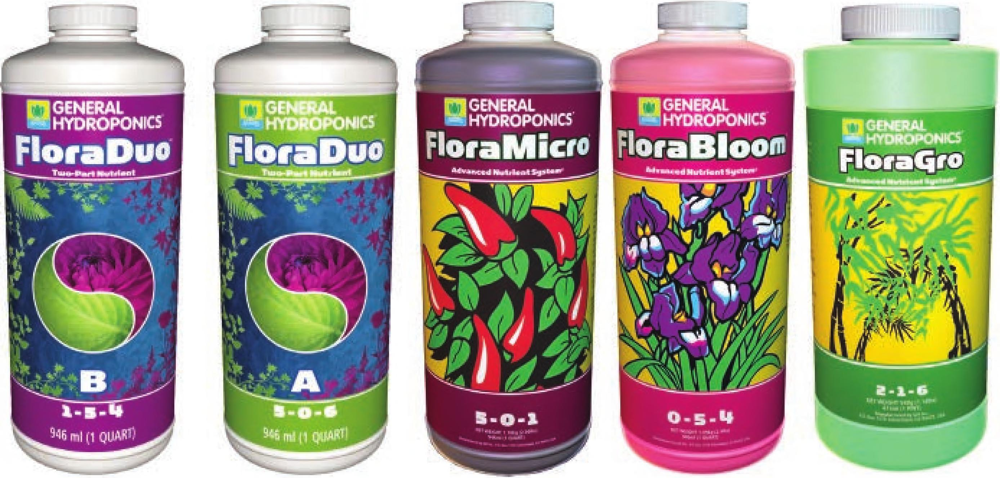

One-part liquid fertilizer is easy to use but more costly. Examples include FloraNova Grow (left), formulated for vegetative growth, and FloraNova Bloom (right), formulated for reproductive growth. Two-part and three-part liquid fertilizers are also easy to use, have a great shelf life, and offer the ability to adjust the ratio of nutrients. Examples include FloraDuo two-part fertilizer (left) and Flora Series three-part fertilizer (right). Two-part and three-part dry fertilizers have the same benefits as liquid ones but are often cheaper. It is sometimes difficult to find multipart dry hydroponic fertilizers at traditional grow stores. A few of the more popular ones are blended by Hort Americas, Hydro-Gardens (Chem-Gro), JR Peters Inc. (Jack's), and Plant Marvel (Nutriculture). learn about advanced hydroponic fertilizers, a great place to start is researching the Hoagland solution. The Hoagland solution and the many versions of modified Hoagland solutions are based on the original hydroponic nutrient recipes developed at the University of California in the 1930s. MEASURING FERTILIZER CONCENTRATION There are several ways to measure fertilizer concentration in a hydroponic nutrient solution. The preferred unit of measurement varies by country and application. ELECTRICAL CONDUCTIVITY Electrical conductivity (EC) is a measure of a material's ability to transport an electrical current. Water's ability to conduct electricity is the reason swimming during a thunderstorm or using an electrical appliance near a bathtub is incredibly dangerous. Surprisingly, pure distilled waterwith no mineral content is actually a very poor conductor. Pure distilled water is not common, and virtually all water sources have some degree of conductivity due to their mineral content. In hydroponics, growers increase the mineral content of the water by adding fertilizers. These fertilizers increase the water's ability to conduct electricity in a predictable pattern. Forthis reason, EC is a great way to estimate the fertilizer concentration in a hydroponic nutrient solution. EC is commonly measured in millisiemens per centimeter (mS/cm). Some countries, primarily Australia and New Zealand, may use conductivity factor (CF) instead of EC. The conversion chart on page 1 55 compares the EC, CF, and ppm. MaxiBloom is a one-part dry fertilizer formulated for reproductive growth. 154 DIY HYDROPONIC GARDENS
